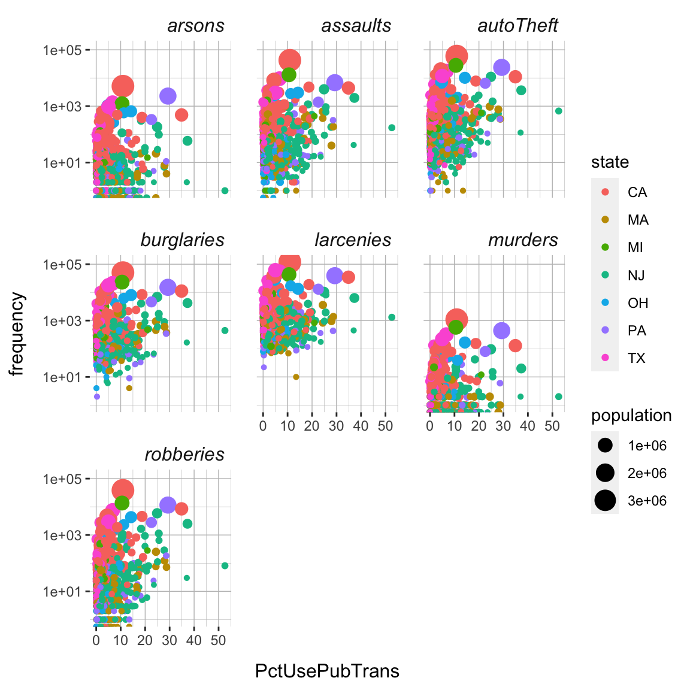

Plotting II
|
Introduction to Data Science
R The R Bootcamp |

|

adapted from paherald.sk.ca
Overview
In this practical you’ll practice customizing plots created using the
ggplot2 package. By the end of this practical you will know
how to:
- Use facetting to create multiple plots.
- Use scaling to alter the plots dimensions.
- Alter and store themes to adjust a plots appearance.
- Create multiple plots in one using the
patchworkpackage. - Create image files using
ggsave().
Tasks
A - Setup
Open your
TheRBootcampR project. It should already have the folders1_Dataand2_Code. Make sure that the data files listed in theDatasetssection above are in your1_Datafolder.Open a new R script. At the top of the script, using comments, write your name and the date. Save it as a new file called
plottingII_practical.Rin the2_Codefolder.Using
library()load the set of packages for this practical listed in the functions section above.
## NAME
## DATE
## Plotting II Practical
library(XX)
library(XX)
library(XX)- For this practical, we’ll use the
crime.csvdata set, containing crime data of US counties across various states. Usingread_csv(), load the data into R and store it as a new object calledcrime.
crime <- read_csv("1_Data/crime.csv")Rows: 1071 Columns: 36
── Column specification ──────────────────────────────────────────────────────────────────────────────────────
Delimiter: ","
chr (2): communityname, state
dbl (34): population, householdsize, pctUrban, medIncome, pctWSocSec, pctWRetire, whitePerCap, blackPerCap...
ℹ Use `spec()` to retrieve the full column specification for this data.
ℹ Specify the column types or set `show_col_types = FALSE` to quiet this message.- Take a look at the first few rows of the data set(s) by printing them to the console.
crime# A tibble: 1,071 × 36
communityname state popul…¹ house…² pctUr…³
<chr> <chr> <dbl> <dbl> <dbl>
1 BerkeleyHeig… NJ 11980 3.1 100
2 Marpletownsh… PA 23123 2.82 100
3 Norwoodtown MA 28700 2.6 100
4 Wacocity TX 103590 2.62 100
5 Shermancity TX 31601 2.54 100
# … with 1,066 more rows, and abbreviated
# variable names ¹population,
# ²householdsize, ³pctUrban
# ℹ Use `print(n = ...)` to see more rowsB - Create facets
- To begin with, create a basic scatter plot (using
geom_points()) pitting each of the 7 crime indicators (murders,robberies,assaults,burglaries,larcenies,autoTheft,arsons) against the percentage of people using public transportation (PctUsePubTrans).
ggplot(data = crime,
mapping = aes(x = XX, y = XX)) +
geom_point()
# and so on- None of these looked very informative, right? This is because the
counts of the each of the crime measures is heavily right skewed. You
will learn more about scaling later, but for now add
scale_y_log10()to fix this. Run the plots again.
ggplot(data = crime,
mapping = aes(x = XX, y = XX)) +
geom_point() +
scale_y_log10()
# and so on- This should have been more telling. Pretty much all crimes seem to
have been positively related to the percentage of individuals using
public transportation. Interesting! But wasn’t it a bit of a pain to
derive this insight by created 7 separate plots. Let’s fix this using
facets. To do this, first, create a long version of the
crimedata set calledcrime_long, using the code below. (Note the use ofcrime_varsas a positive selector forgather()).
# vector of crime variables
crime_vars = c("murders","robberies","assaults","burglaries","larcenies","autoTheft","arsons")
# transform to long
crime_long <- crime %>%
pivot_longer(names_to = "crime_var",
values_to = "frequency",
cols = all_of(crime_vars))- Using the the
crime_longdata set, you can now make use of the amazing power ofggplot2’s facet functions, such asfacet_wrap(). Usefacet_wrap()to automatically plot crime frequency against the percentage of people using public transportation for each of the crime variables.
ggplot(data = crime_long,
mapping = aes(x = XX, y = XX)) +
geom_point() +
scale_y_log10() +
facet_wrap(~ XX)ggplot(data = crime_long,
mapping = aes(x = PctUsePubTrans, y = frequency)) +
geom_point() +
scale_y_log10() +
facet_wrap(~ crime_var)
- This was much more efficient, right? Now explore the relationship of
frequency to other variables, such as
medIncome,TotalPctDiv, orPctNotHSGrad, for each of the crime measures. What variables do predict, which kind of crime? Explore!
C - Customize plots using theme()
Now that we have an informative plot, let’s focus on making it a bit
more “pretty”“, using ggplot’s theme() function. The goal
is to create a plot that looks like the plot below.
crime_facets <- ggplot(data = crime_long,
mapping = aes(x = PctUsePubTrans, y = frequency)) +
geom_point() +
scale_y_log10() +
facet_wrap(~ crime_var) +
theme(
panel.background = element_rect(fill='white'),
panel.grid.major = element_line(color = 'grey75',
size = .25),
panel.grid.minor = element_line(color = 'grey75',
size = .1),
strip.background = element_rect(fill='white'),
strip.text = element_text(face='italic', size=12, hjust=1),
axis.title.y = element_text(size=12,margin=margin(r = 10)),
axis.title.x = element_text(size=12,margin=margin(t = 10)),
panel.spacing = unit(1.1, "lines")) +
labs(x = '% public transportation', y = 'Crime frequency')
crime_facets- To begin with store one of the facetted plots of section B as
crime_facets.
crime_facets <- XX- Now let’s begin changing its appearance. First, change the color of
the background to
"white"of the panel using thepanel.backgroundargument and theelement_rect()function.
crime_facets +
theme(
panel.background = element_rect(fill = XX)
)crime_facets +
theme(
panel.background = element_rect(fill = 'white')
)
- Next, change the major and minor grid lines to color
"grey75"and sizes.25and.1, respectively, using thepanel.grid.majorandpanel.grid.minorarguments and theelement_line()function.
crime_facets +
theme(
panel.background = element_rect(fill = XX),
panel.grid.major = element_line(color = XX, size = XX),
panel.grid.minor = element_line(color = XX, size = XX)
)crime_facets +
theme(
panel.background = element_rect(fill = 'white'),
panel.grid.major = element_line(color = 'grey75', size = .25),
panel.grid.minor = element_line(color = 'grey75', size = .1)
)
- Next, change the strip background - the background of the panel
headers - to color
"white"using thestrip.backgroundargument and theelement_rect()function.
crime_facets +
theme(
panel.background = element_rect(fill = XX),
panel.grid.major = element_line(color = XX, size = XX),
panel.grid.minor = element_line(color = XX, size = XX),
strip.background = element_rect(fill = XX),
)crime_facets +
theme(
panel.background = element_rect(fill = 'white'),
panel.grid.major = element_line(color = 'grey75', size = .25),
panel.grid.minor = element_line(color = 'grey75', size = .1),
strip.background = element_rect(fill = 'white')
)- Next, change the font in the strip to
"italic", adjust it to the right side, and set size to12using thestrip.textargument and theelement_text()function. See?element_text().
crime_facets +
theme(
panel.background = element_rect(fill = XX),
panel.grid.major = element_line(color = XX, size = XX),
panel.grid.minor = element_line(color = XX, size = XX),
strip.background = element_rect(fill = XX),
strip.text = element_text(face = XX, size = XX, hjust = XX)
)crime_facets +
theme(
panel.background = element_rect(fill = 'white'),
panel.grid.major = element_line(color = 'grey75', size = .25),
panel.grid.minor = element_line(color = 'grey75', size = .1),
strip.background = element_rect(fill = 'white'),
strip.text = element_text(face = 'italic', size = 12, hjust = 1)
)
- Next, set the font size of the axis labels also to
12and add a margin of10to the top and right side, respectively, of the labels respectively, usingaxis.title.xandaxis.title.yfunctions and theelement_text()andmarginfunctions. See?margins().
crime_facets +
theme(
panel.background = element_rect(fill = XX),
panel.grid.major = element_line(color = XX, size = XX),
panel.grid.minor = element_line(color = XX, size = XX),
strip.background = element_rect(fill = XX),
strip.text = element_text(face = XX, size = XX, hjust = XX),
axis.title.x = element_text(size = XX, margin = margin(t = XX)),
axis.title.y = element_text(size = XX, margin = margin(r = XX)),
)crime_facets +
theme(
panel.background = element_rect(fill = 'white'),
panel.grid.major = element_line(color = 'grey75', size = .25),
panel.grid.minor = element_line(color = 'grey75', size = .1),
strip.background = element_rect(fill = 'white'),
strip.text = element_text(face = 'italic', size = 12, hjust = 1),
axis.title.x = element_text(size = 12, margin = margin(t = 10)),
axis.title.y = element_text(size = 12, margin = margin(r = 10))
)
- Finally, increase the spacing between the panels slightly by setting
the space between to
1.1"lines"using thepanel.spacingargument and theunitfunction.
crime_facets +
theme(
panel.background = element_rect(fill = XX),
panel.grid.major = element_line(color = XX, size = XX),
panel.grid.minor = element_line(color = XX, size = XX),
strip.background = element_rect(fill = XX),
strip.text = element_text(face = XX, size = XX, hjust = XX),
axis.title.x = element_text(size = XX, margin = margin(t = XX)),
axis.title.y = element_text(size = XX, margin = margin(r = XX)),
panel.spacing = unit(XX, units = XX)
)crime_facets +
theme(
panel.background = element_rect(fill = 'white'),
panel.grid.major = element_line(color = 'grey75', size = .25),
panel.grid.minor = element_line(color = 'grey75', size = .1),
strip.background = element_rect(fill = 'white'),
strip.text = element_text(face = 'italic', size = 12, hjust = 1),
axis.title.x = element_text(size = 12, margin = margin(t = 10)),
axis.title.y = element_text(size = 12, margin = margin(r = 10)),
panel.spacing = unit(1.1, units = "lines")
)
- Did you manage to reproduce the plot above? One other thing seems
missing. Add appropriate labels using the
labs()function.
crime_facets +
theme(
panel.background = element_rect(fill = XX),
panel.grid.major = element_line(color = XX, size = XX),
panel.grid.minor = element_line(color = XX, size = XX),
strip.background = element_rect(fill = XX),
strip.text = element_text(face = XX, size = XX, hjust = XX),
axis.title.x = element_text(size = XX, margin = margin(t = XX)),
axis.title.y = element_text(size = XX, margin = margin(r = XX)),
panel.spacing = unit(XX, units = XX)
) +
labs(x = XX, y = XX)crime_facets +
theme(
panel.background = element_rect(fill = 'white'),
panel.grid.major = element_line(color = 'grey75', size = .25),
panel.grid.minor = element_line(color = 'grey75', size = .1),
strip.background = element_rect(fill = 'white'),
strip.text = element_text(face = 'italic', size = 12, hjust = 1),
axis.title.x = element_text(size = 12, margin = margin(t = 10)),
axis.title.y = element_text(size = 12, margin = margin(r = 10)),
panel.spacing = unit(1.1, units = "lines")
) +
labs(x = '% public transportation', y = 'Crime frequency')
D - Customize plots using theme()
- When you managed to reproduce the target theme, save all of the
theme setting in an independent object called
crime_theme.
crime_theme <- theme(
XX = XX,
XX = XX,
...
)crime_theme <- theme(
panel.background = element_rect(fill = 'white'),
panel.grid.major = element_line(color = 'grey75', size = .25),
panel.grid.minor = element_line(color = 'grey75', size = .1),
strip.background = element_rect(fill = 'white'),
strip.text = element_text(face = 'italic', size = 12, hjust = 1),
axis.title.x = element_text(size = 12, margin = margin(t = 10)),
axis.title.y = element_text(size = 12, margin = margin(r = 10)),
panel.spacing = unit(1.1, units = "lines")
)- Now create new plots with different variables on x-axis and simply
add the
crime_themein order to apply your personalized theme.
new_crime_plot + crime_theme- If you don’t like your theme, go back and make changes to it, and
then apply your new theme onto your plots. Go explore! Try out other
arguments of
theme()(see?theme), such asaxis.ticksorstrip.placement.
E - Scaling
When creating a plot ggplot automatically chooses
sensible dimensions for your plot in terms of x- and y-axis limits, geom
sizes, or colors. However, all of these aspects of the plot can also be
controlled manually or semi-manually using various scale_*
functions.
- Before playing around with them, add one more element to your plot,
which will help you to realize the importance of scaling. That is, color
the points according to state by mapping the
statevariable onto thecolorargument and size the points according to the county’s population by mapping thepopulationvariable onto thesizeargument. Store the resulting plot in an object calledcrime_plot.
crime_plot <-
ggplot(data = crime_long,
mapping = aes(x = XX, y = XX,
color = XX, size = XX)) +
geom_point() +
scale_y_log10() +
facet_wrap(~ XX) +
crime_themecrime_plot <- ggplot(data = crime_long,
mapping = aes(x = PctUsePubTrans, y = frequency,
color = state, size = population)) +
geom_point() +
scale_y_log10() +
facet_wrap(~ crime_var) +
crime_theme
crime_plot
- First, using
scale_size()and therangeargument, change the scaling of the points to reduce the degree of overlap among the points (see?scale_size). Try out a few numbers (smaller than 10) to create a version of the plot with a decent trade-off between point size and point overlap.
crime_plot + scale_size(range = c(XX, XX))crime_plot + scale_size(range = c(.5, 3))- You may find that still some of the larger points are cropped off at
the upper end of the panels. Fix this by increasing the y-axis limits
using the
scale_y_log10()function. Set the limits to0and2e+5(i.e.,200,000). (Note that R will tell you that this will overwrite the previous use ofscale_y_log10(), which is what we intend to do).
crime_plot +
scale_size(range = c(XX, XX)) +
scale_y_continuous(limits = c(XX, XX))crime_plot +
scale_size(range = c(.5, 3)) +
scale_y_log10(limits = c(1, 2e+5))Scale for 'y' is already present. Adding another scale for 'y', which will replace the existing scale.- Next, change the colors to a different, possibly more appropriate
color scheme. One way to this is via the
scale_color_gradient()or similar functions. Another is to use a specific, pre-defined scheme, such asscale_color_colorblind(). Use the latter. You will see that the colors have much more contrast making it distinguishing the colors based on luminescence alone easier.
crime_plot +
scale_size(range = c(XX, XX)) +
scale_y_log10(limits = c(1, XX)) +
scale_color_colorblind()crime_plot +
scale_size(range = c(.5, 3)) +
scale_y_log10(limits = c(1, 2e+5)) +
scale_color_colorblind()Scale for 'y' is already present. Adding another scale for 'y', which will replace the existing scale.
- Another approach to changing colors is to supply them manually,
e.g., using
scale_color_manual(). Try assigning your own choice of colors. You may pick them fromcolors()or generate them using, for instance, theviridisfunction from theviridispackage (you may need to runinstall.packages('viridis')before using it), which provides an optimized set of colors designed to be (1) colorful, (2) perceptually uniform, (3) robust to colorblindness, (4) and pretty. Take the latter approach, i.e., use theviridis()function to generate colors, in the context of thescale_color_manual()function.
crime_plot +
scale_size(range = c(XX, XX)) +
scale_y_log10(limits = c(1, XX)) +
scale_color_manual(values = viridis(7))crime_plot +
scale_size(range = c(.5, 3)) +
scale_y_log10(limits = c(1, 2e+5)) +
scale_color_manual(values = viridis(7))Scale for 'y' is already present. Adding another scale for 'y', which will replace the existing scale.- Alright the plot fairly pretty and readable now. But there is always more to be done and tastes differ, of course. Go explore!
F - Creating image files
- When you have found a plot that suits your taste, it’s time to save
it as an image file. Store your favorite plot in a new object called
crime_final.
crime_final <- ggplot(...) + ... # Include your plotting code hereRun your
crime_finalobject to see that it does indeed contain your plot.Save your plot to a
.pdf-file calledcrime_finalusingggsave(). When you finish, find your plot in3_Figuresand open it to see how it looks!
# Save crime_final to a pdf file
ggsave(filename = "crime_plot",
plot = crime_final,
device = "pdf",
path = '3_Figures',
width = 4,
height = 4,
units = "in")Play around with the
widthandheightarguments to change the dimensions of the plot.Customize the code to create a
.pngimage.
X - Challenges: Multiple Plots
In this section, you can play around with the patchwork
package (don’t forget to load it) do combine multiple plots into a
single one.
Create three different plots that plot
frequencyagainst different variables in our data set and call these threecrime_a,crime_b, undcrime_cNow, combine all three plots horizontally using
verbrechen_a + verbrechen_b + verbrechen_c.Or, place the third plot below the first two
verbrechen_a + verbrechen_b / verbrechen_c.Now change the theme by applying
theme_void()to all three using the&-Operator.Finally, save your plot as a pdf using
ggsave().
Examples
# ggplot2 -----------------------
library(tidyverse) # Load tidyverse (contains ggplot2!)
# create a scatter plot of highway miles per gallon against engine displacement
ggplot(data = mpg,
mapping = aes(x = displ, y = hwy)) +
geom_point()
# Store plot objects ------------
# store
my_plot <- ggplot(data = mpg,
mapping = aes(x = displ, y = hwy)) +
geom_point()
# evaluate (aka plot)
my_plot
# Facets ------------
# create separate plots for each car class
my_plot <- my_plot + facet_wrap(~class)
# plot
my_plot
# Customize themes ------------
# change panel background to 'green'
my_plot +
theme(
panel.background = element_rect(fill='green')
)
# change grid lines
my_plot +
theme(
panel.grid.major = element_line(color = 'red', size = 2),
panel.grid.minor = element_line(color = 'blue', size = 1)
)
# change strip background and text
my_plot +
theme(
strip.background = element_rect(fill = 'blue'),
strip.text = element_text(face = 'bold', size = 12)
)
# change axis titles
my_plot +
theme(
axis.title.y = element_text(size = 12, margin = margin(r = 10)),
axis.title.x = element_text(size = 12, margin = margin(t = 10))
)
# change panel spacing
my_plot +
theme(
panel.spacing = unit(2, "lines")
)
# Store themes ------------
# create theme
my_theme <- theme(
panel.background = element_rect(fill='green'),
panel.grid.major = element_line(color = 'red', size = 2),
panel.grid.minor = element_line(color = 'blue', size = 1),
strip.background = element_rect(fill = 'blue'),
strip.text = element_text(face = 'bold', size = 12),
strip.background = element_rect(fill = 'blue'),
strip.text = element_text(face = 'bold', size = 12),
axis.title.y = element_text(size = 12, margin = margin(r = 10)),
axis.title.x = element_text(size = 12, margin = margin(t = 10)),
panel.spacing = unit(2, "lines")
)
# apply theme
my_plot + my_theme # no parentheses
# Scaling ------------
# change x-axis scaling
my_plot + scale_x_continuous(limits = c(0, 10))
# change coloring
ggplot(data = mpg,
mapping = aes(x = displ, y = hwy,
color = class)) +
geom_point() +
scale_color_manual(values = viridis(7))
# Create image files ------------
# create pdf of my_plot
ggsave(filename = "my_plot_name",
plot = my_plot,
device = "pdf",
path = 'plotting_folder',
width = 4,
height = 4,
units = "in")Datasets
| File | Rows | Columns |
|---|---|---|
| crime.csv | 1071 | 36 |
The crime data set is subsets of the Communities and
Crime Unnormalized Data Set data set from the UCI Machine Learning
Repository. Find variable descriptions below or at Communities
and Crime Unnormalized Data Set
Variable descriptions
| Variable | Description |
|---|---|
| communityname | Community name |
| state | US state (by 2 letter postal abbreviation) |
| population | population for community |
| householdsize | mean people per household |
| pctUrban | number of people living in areas classified as urban |
| medIncome | median household income |
| pctWSocSec | percentage of households with social security income in 1989 |
| pctWRetire | percentage of households with retirement income in 1989 |
| whitePerCap | per capita income for caucasians |
| blackPerCap | per capita income for african americans |
| AsianPerCap | per capita income for people with asian |
| HispPerCap | per capita income for people with hispanic heritage |
| PctPopUnderPov | percentage of people under the poverty level |
| PctNotHSGrad | percentage of people 25 and over that are not high school graduates |
| PctUnemployed | percentage of people 16 and over, in the labor force, and unemployed |
| TotalPctDiv | percentage of population who are divorced |
| PersPerFam | mean number of people per family |
| PctWorkMom | percentage of moms of kids under 18 in labor force |
| NumImmig | total number of people known to be foreign born |
| PctImmigRecent | percentage of immigrants who immigated within last 3 years |
| PctNotSpeakEnglWell | percent of people who do not speak English well |
| RentMedian | rental housing - median rent |
| NumInShelters | number of people in homeless shelters |
| NumStreet | number of homeless people counted in the street |
| PctForeignBorn | percent of people foreign born |
| PctBornSameState | percent of people born in the same state as currently living |
| LandArea | land area in square miles |
| PopDens | population density in persons per square mile |
| PctUsePubTrans | percent of people using public transit for commuting |
| murders | number of murders in 1995 |
| robberies | number of robberies in 1995 |
| assaults | number of assaults in 1995 |
| burglaries | number of burglaries in 1995 |
| larcenies | number of larcenies in 1995 |
| autoTheft | number of auto thefts in 1995 |
| arsons | number of arsons in 1995 |
Functions
Packages
| Package | Installation |
|---|---|
tidyverse |
install.packages("tidyverse") |
patchwork |
install.packages("patchwork") |
Optional
| Package | Installation |
|---|---|
viridis |
install.packages("viridis") |
Functions
Facets
| Function | Package | Description |
|---|---|---|
facet_wrap() |
ggplot2 |
Create facets that wrap to fit the screen |
facet_grid() |
ggplot2 |
Create facets along one or more variables in a grid |
themes
| Function | Package | Description |
|---|---|---|
theme() |
ggplot2 |
Customize theme (see ?theme) |
element_rect() |
ggplot2 |
Customize rect elements of theme |
element_line() |
ggplot2 |
Customize line elements of theme |
element_text() |
ggplot2 |
Customize text elements of theme |
element_blank() |
ggplot2 |
Remove elements from theme |
scales
| Function | Package | Description |
|---|---|---|
scale_x_*(), scale_y_*() |
ggplot2 |
Various functions to control the x- and y-axes |
scale_size_*() |
ggplot2 |
Various functions to control sizes |
scale_color_*() |
ggplot2 |
Various functions to control colors |
scale_fill_*() |
ggplot2 |
Various functions to control fill colors |
scale_alpha_*() |
ggplot2 |
Various functions to control color transparency |
colors
| Function | Package | Description |
|---|---|---|
viridis() |
viridis |
Generate colors from the viridis palette |
Resources
Documentation
The main
ggplot2webpage at http://ggplot2.tidyverse.org/ has great tutorials and examples.Check out Selva Prabhakaran’s website for a nice gallery of ggplot2 graphics http://r-statistics.co/Top50-Ggplot2-Visualizations-MasterList-R-Code.html
ggplot2is also great for making maps. For examples, check out Eric Anderson’s page at http://eriqande.github.io/rep-res-web/lectures/making-maps-with-R.html
Cheatsheet

from
R
Studio